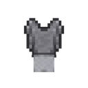

Weapons
Kunai, katana, shuriken, senbon and unique weapons.
A future database for weapons, clothing, currency, food and special utility items.
Kunai, katana, shuriken, senbon and unique weapons.

Outfits, vests, protectors and cosmetic equipment.

Ryo denominations and money-related mechanics.

Gama Chan, books, scrolls and special-use items.
Wallet item. Right-click to open its personal storage. Replace this short summary with the final exact rules and vendor information.
| Field | What to write |
|---|---|
| Name | Display name + category |
| Obtaining | Crafting, vendor, drop or quest |
| Price | Ryo cost if applicable |
| Use | Right-click / passive / equipment effect |
| Notes | Restrictions, slot, stack size, etc. |
Copy templates/item-template.html when you want a dedicated page for an important item.